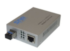

Медиаконвертер — прибор, как правило, с двумя портами, обычно используемый для преобразования среды передачи данных (коаксиал-витая пара, витая пара-оптоволокно)
Традиционно, применительно к сетевым технологиям, медиаконвертеры осуществляют свою работу на 1-м уровне Модели OSI. В этом случае невозможно преобразование скорости передачи данных между 2-мя средами, а также невозможна другая интеллектуальная обработка данных. В этом случае медиаконвертеры также могут называть трансиверами. С развитием технологий медиаконвертеры снабдили дополнительными интеллектуальными возможностями, чтобы обеспечить стыковку старых устройств с более новыми. Медиаконвертеры стали работать на 2-м уровне модели OSI и получили возможность преобразовывать не только среду, а также и скорость передачи данных, обладать другими сервисными функциями, как оповещение об обрыве линии связи на противоположной стороне, контроль за потоком передачи данных, другими техническими возможностями.